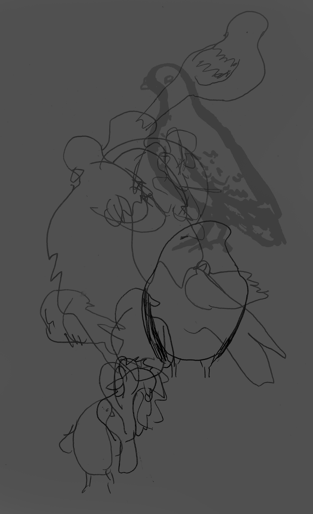

"Viene auito?"
"L'ho fatto!!"

Pigeons
Location:
Materials:
Pen, marker
Journal entry
So this afternoon I found myself in a park about a 40 minutes’ walk from my apartment. This place is so quiet and serene it almost instantly became one of my favorite nooks I’ve found in Florence. I sat near this guy with a dog because he looked like he knew what he was doing and would leave at the appropriate time before the park closed. Well... turns out I was WRONG because he got up at about 7:30 and told me as he passed by me that the park had closed a little while ago. So then I found myself locked in this park, standing at the gate while this guy is on the phone trying to get someone to come unlock it. I didn’t know what would happen to me if the police came and got us in trouble for trespassing, so I found a plastic bucket and stood on it to first hop a chain link fence and then a pretty large cement/brick wall. I scratched my legs up a bit in the process but I made it out all in one piece and it was totally worth it. Then on my way back home from this incident I stopped to draw some pigeons.